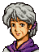

Narration Prince Leif, captive
レイドリックの手に落ちたリーフは
帝国兵の手によって
マンスターへと護送される
そこは、グランベル皇帝より北トラキアを
あずかるフリージ家の支配下にあり
元コノート王国の近衛将軍で、帝国に
内通して功を立てたレイドリック男爵が
コノートにいるフリージ当主ブルームの
配下として、その統治をまかされていた
そこでリーフが見たものは・・・
Opening 1 Raydrik's scheme

ふっふっふっ
これでワシの出世も
まちがいないな
ダルシン！
コノートから引き取りにくるまで
あのこぞうを逃がすなよ！

・・・はっ・・・
ワシは闘技場へ行く
女、お前もついてこい

なぜ、私が・・・
娘たちに会いたくはないのか？
娘？
・・・マリータとナンナ？
そうだ
二人とも元気でおるぞ
心配するな
指一本ふれてはおらぬ
・・・本当に
二人に会わせてくれるのですか？
約束しよう
・・・わかりました
案内してもらいましょう・・・
そうこなくてはな
クックックッ・・・
・・・・・・
Opening 2 Lord Ceeed~!

ブライトン、きみたちは
この地下牢にとらわれている人たちを
助けてくれ
私は
アスベルとともに
子どもたちを探しに行く

承知した
市民たちを解放したら
われわれも応援にいく
そうか
ではまた後ほど会おう
幸運を祈っている！
Opening 3 The Magi Squad's scheme

ラーラ
あなたの腕だけが頼りなのよ
大丈夫ね？

うん
カギ開けならまかせといて
だけど、ちゃんと守ってよね
万が一のときは
相手の武器をうばえばいい
おまえにならできるだろう
気安くいわないでよ
重い武器なんて
あたしには持てないんだから
心配しないで
ブライトンと私がついているわ
さあ、行きましょう！
Turn 1 Lifis's scheme

ちくしょう・・・
ついてねえなあ・・・

あのう・・・ひょっとして・・・
リフィス海賊団の
リフィス親分さんじゃないですかい？
あ、ああ、そうだけど・・・
やっぱり！
いや、賞金首のはり紙にそっくりなんで
もしやと思ったんですが・・・
へへ・・・
オレもけっこう有名じゃねえか・・・
まてよ・・・こいつを利用して・・・
あれ、どうしたんです？ リフィスさん
えれえ難しそうな顔をなさって・・・
・・・実はな
この牢から逃げ出す手はずを考えてたんだ
ええっ！
そんなことできるんですかい？
バカ、考えてもみろ
このオレさまがこうして捕まってるんだぜ
オレのかわいい子分どもが
それを黙って見てるわきゃねえだろうが
だから
オレは近々おさらばすることになる
短い間だがよろしくな
そ、そういうことなら
リフィスさん
いっしょに連れていってくださいよ
うーん
・・・まあ、働きしだいによっちゃ
考えてやらなくもないが
ホ、ホントっすか！！！
まかしてください
うでっぷしにゃ自信があるんです
あんな牢番くらいなら
一発でのしてみせますぜ

リフィスさん
その話
オレにも一口かませてくださいよ

おれもおれも
へへ・・・
バカはあつかいやすくて助かる
あとはチャンスをどうやって作るか、だな
Turn 2 Karin and Fergus meet

急ににぎやかになったな
おまえはなんで捕まったんだ？

・・・きみは？
俺はフェルグス
旅の傭兵さ
いや、まいったよ
兵士が娘にちょっかいを出してたんで
止めようとしたら捕まっちまった
ひどい話だぜ、まったく

あれで止めようとしただけ？
かわいそうに
あの兵士、半分死にかけていたわよ
まったく、むちゃくちゃなんだから・・・
おいおい、それはないだろ
はじめに止めに入ったのは
おまえなんだぜ
おかげで仲間だと思われて
私まで捕まっちゃったじゃない
もう、どうしてくれるのよ！
責任とってよね！
あはは
まあ、すんだことを
くよくよ言うのはよそうぜ
ふぁ～
なんだかねむくなってきちまった
めしになったら起こしてくれ、じゃあな
もう
なんて人なの、まったく・・・
あっ、ごめんなさい
私はカリンっていうの
よろしくね
カリン？
・・・トラキアじゃめずらしい名前だね
私はシレジアから来たの
この街にはついたばかり
なのに
こいつのおかげで
ひどい目にあっちゃった
シレジア・・・
ずっと北にある国だね
名前だけは聞いたことがある
そのシレジアからなんのために？
私たちの王子様
国を出ちゃったの
王妃様は亡くなられたし
姫様はまだお若いし
私たち
どうしたらいいのかわからなくなって
それで王子様をさがしにきたの
シレジア王国は、帝国に滅ぼされたと
聞いたけど
王家の人たちは無事なのか？
ええ
帝国に反発する人たちは
ずっと北の
トーヴェという街に移り住んで
王家を守り続けているわ
私も、いつかは
近衛の天馬騎士になって
そのお手伝いをするの
すごいな
天馬騎士になるのなら
空を飛べるんだね
うん、飛べるよ
私はまだナイトじゃないから
飛ぶだけで精一杯だけど
ペガサスと心は通じるの
エルメスって言うのよ
すごく可愛くてね
それに賢いの
今だって
私をさがして
空を舞っていると思う
それで
王子が国を出たのはどうして？
国王様をさがしに行くんだって・・・
でも、国王様っておかしな方でね
国や家族をほったらかして
ずっと国にはいらっしゃらないの
みんな怒っているわ
もう国王には期待しないって
だから
セティ王子には、王になるために
帰ってきていただきたいの
だから私がお迎えに来たんだけど
こいつのおかげで・・・
どいつのおかげだって？
おまえ、ちょっとしずかにできねぇのか
ここは牢獄だぜ
ねているみなさんにご迷惑だろうが
こんな状況で
いびきかいてねてられるのは
あんたくらいのものよ
もう
ほんとに無神経なんだからっ

こらっ
おまえら、うるさいぞ！
しずかにしてろ！！
ほ～ら、おこられた
あははは・・・
ムッ・・・
・・・・・・
おまえ、なんだか暗いな
よかったら話してみなよ
力になるぜ
・・・そうだね、きみたちになら・・・
NPC turn 2

ごほっ、ごほっ、ごほっ・・・
.png)
ばあさん、大丈夫かい？
わたしのことは心配いりません
どうせ老い先短い身です
それよりも孫が・・・ごほごほごほ・・・
ほらほら
無理しちゃいけねえよ
ばあさん、いいから横になってな
.png)
あんなおばあさんまで・・・
そうさ、だからいつまでも
あいつらをのさばらしとくわけにゃ
いかねえんだよ
ですが・・・本当に
マギ団の力で帝国の支配を
くつがえせるのでしょうか？
簡単にゃいかねえだろうよ
だからといって
やらなきゃ可能性はゼロだ
だったら、あの人を信じるしかねえだろう
勇者・・・セティ様・・・
そうさ
あの人が現れる前
マギ団は帝国の連中に追いつめられ
壊滅寸前だった
それが今じゃどうだ？
連中にひとあわもふたあわもふかせれる
存在になったじゃねえか
・・・もっとも
つかまっちまったオレが
えらそうにいう話じゃねえけどよ
とにかく、あの人を信じろ
あの人を信じていれば
まちがいはねえんだ
When the door to Lifis's cell is opened
リフィスさん、カギが開きましたぜ！
すげえな
リフィスさんの言ったとおりだ！
・・・・・・
あれ、どうしたんです？
子分さんたちが助けに来たってのに
うれしくないんですかい？
い、いや、そんなことはねえよ・・・
おいおい
本当に誰か助けにきたのかよ・・・
ホラもふいてみるもんだな・・・
When the door to Leif's cell is opened
Only if Fergus and Karin are both alive
リーフ王子
誰かが助けにきてくれたようだぜ
俺たちも逃げるとするか
いったい何者なんだ？
そんなことは助かってから考えな
今はとにかく逃げることだ
『北の階段』まで行けば脱出できる
俺が敵を食い止めてやるから
王子は先に行きな
しかし、ぼくが脱出すれば
きみたちはどうなる？
残されたものは
全員捕えられるだろうな
まあ、王子さえ無事ならそれでいい
そんなことはできない！
ぼくが『りだつ』するのは
他の者が
全員『りだつ』したあとだ！
フッ・・・
泣かせてくれるぜ
まあ、いいさ
俺もしばらくつきあってやる
話を聞いた以上は
ほっとくわけにもいかないしな
ふーん
あんたって見かけによらず
いいオトコなのね
ほれたか？
ば、ばかなことを
言わないでよ！！
冗談だよ
で、おまえはどうする
マギ団のリーダーは
セティっていうヤツらしいぜ
おまえの探している
王子様じゃないのか？
ええ、たぶんね
でも、今はリーフ様のことが心配
女の子を人質にするなんて
そのレイドリックっていうやつ
絶対に許せないわ
私も救出のお手伝いをします
おまえがか？・・・
おまえ、戦えるのか？
自信ないけど、がんばるわ！
ふうっ・・・まいったな
これじゃ守るものが多すぎて
大変だぜ・・・
When the civilians' cell door (left) is opened
仲間がきた、チャンスだ！
みんな、逃げ出そう！
確か、西の通路に
地上に抜ける階段があったはずだ
そこを目指せ！
When the civilians' cell door (right) is opened
.png)
おお、マギ団の方たちか
ありがたい
みなのしゅう、逃げ出しましょうぞ
確か、東の通路に
逃げ出せそうな階段があったはずじゃ
Talk: Leif (or Lifis) → Dalsin
なんだと！
俺の弟まで子供狩りに！？
そうか・・・世話になったな
もう
帝国にもレイドリックにも愛想がつきた
俺の命
おまえたちに預けよう！
After seizing Julius and Ishtar!

ベルドよ
子供狩りはすすんでおるか？

はっ、マンフロイ様
一部住民の抵抗はありましたが
それ以外はとどこおりなく
では
あとはターラ市だけだな
どうしてもいやだというのなら
かまわん
街ごと焼いてしまえ
今後の見せしめにもなる
容赦はするなよ
はい
そのつもりでおります
しかし
フリージ家の将軍たちが
どうも及び腰で
包囲はしたものの
いまだ手つかずの状態です
イシュタル王女
貴女のお父上は
戦意にとぼしいように見えるが
どういうおつもりなのかな？

父はなやんでいます
多くの重臣たちが
子供狩りに反対しているからです
もちろん、私も兄も
この一件には強く反対しています
マンフロイ大司教
どうかお願いです
子供狩りはやめてください
まだ、年端もいかない子どもたちを
親から引き逃すなんて
むごすぎます
ましてや
ロプト神の生けにえにするなど
人のすることではありません！

イシュタル
なにか
かんちがいをしていないか？
ぼくは
子どもたちを殺せと
いっているのではない
ただ彼らを教育して
ぼくの帝国に
ふさわしい人間にしたいだけなんだ
試練にたえたものたちは
帝国の臣民となり
下等な人間どもを支配する
つまり
新しい貴族になるわけさ
これは
幸せをつかむチャンスなんだよ
たがいに憎しみあい、戦わせ
生き残ってはじめて
帝国の臣民と認められる・・・
それが幸せといえるのでしょうか？
・・・まあいいさ
きみにもそのうちわかるだろう
そんなことよりイシュタル
裏庭にきれいな花壇があるんだ
一緒に見に行こうよ
・・・ユリウス様・・・
Dalsin: battle quote
おまえたち
悪いことは言わん
牢にもどれ！
Dalsin: defeat quote
ディアナ・・・
兄ちゃんは帰れない・・・
ユベルを・・頼む・・・
Dalsin: release quote
甘いやつらだ・・・
だが借りができたな